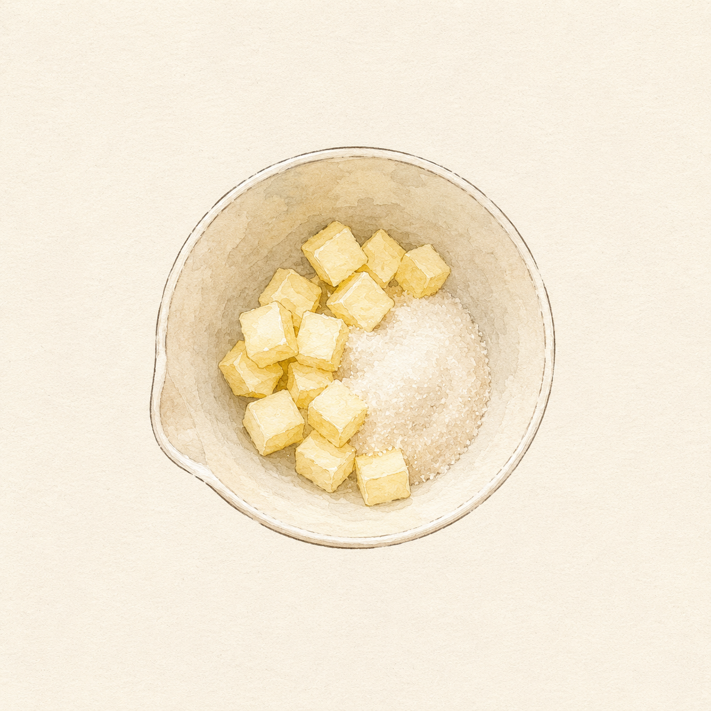

Things I Wish I Knew
Notes from a baker who learned the hard way.
Is My Batter Ready?

STARTButter and sugar in the bowl. Not melted — soft.
How to Store Your Cake
Get the right answer for your cake.
Your storage guide will appear here

One pound of butter. One pound of sugar. One pound of eggs. One pound of flour. No leavening, no milk — just four ingredients in perfect equality, creamed together and baked until golden.
The genius was mathematical. In an era when most bakers couldn't read, the equal-weight formula was a mnemonic that never failed. The recipe lived in the hands, not the book.
When Amelia Simmons published American Cookery in Hartford, Connecticut, she was writing for a new country that needed its own culinary identity. The pound cake she included was the English formula — intact, unchanged, carried across the Atlantic.
The recipe above is transcribed verbatim from the original 1796 printing. Note the rose water — a flavoring that would quietly disappear over the next century as vanilla became the American standard.
Eliza Leslie's Seventy-five Receipts for Pastry, Cakes, and Sweetmeats was the first American cookbook to explain the why behind the steps — not just the what. Her pound cake added precision: cream the butter thoroughly, add eggs individually, stir the flour gently.
These weren't new ingredients. They were new technique — and technique, it turned out, was everything.
When Procter & Gamble introduced Crisco, it promised consistency and economy. Shortening produced a whiter, softer crumb — and as baking powder became standard, the dense loaf began to lift. The pound cake was democratized.
But something was quietly lost. The deep, complex flavour of butter — irreplaceable and irreducible — faded from millions of home kitchens. The recipe survived. The soul of it changed.
By mid-century, pound cake had completed its transformation from English aristocratic staple to American democratic institution. Baked in Bundt pans, loaf pans, and tube pans across the South and Midwest, it was the cake everyone knew how to make and everyone was glad to see.
The shortening era made it accessible to every kitchen. What it lost in depth of flavour, it gained in reach — and in the warmth of a shared table.
Sour cream for moisture. Cream cheese for velvet. Brown butter for depth. Matcha, lemon, almond, cardamom — the pound cake became a canvas that accepts any flavour without losing its essential identity.
Today's bakers returned to butter — and went further than the 18th century ever imagined. The notebook you're reading is a record of that conversation. Every variation inside is still, at its core, one pound of each.
Baker's Tips
The science, the technique, and the small details that separate a good pound cake from a perfect one.
Cold butter won't cream properly. Cold eggs break the emulsion. Take butter and eggs out 1–2 hours before you start — no exceptions.
⚗ Fat + air = your leaveningBeat butter and sugar a full 4–5 minutes until pale, fluffy, almost white. The air you beat in now is the only lift this cake gets. Don't rush it.
⚗ Aeration = riseAdd eggs one at a time, mixing 30 seconds between each. Rushing causes the emulsion to break. If it curdles: add 1 tbsp flour and keep mixing — it will recover.
⚗ Emulsion stabilityOnce flour goes in, fold gently until just combined. Over-mixing develops gluten — turning your velvety cake into a tough, rubbery loaf. Stop the moment you see no streaks.
⚗ Gluten = structure, not rubber325°F / 165°C is ideal. Higher heat sets the exterior before the center cooks through — leaving a perfect crust hiding a raw, dense middle.
That split running down the center is called oven spring — steam escaping as the cake rises. It is not a flaw. It's a sign your cake baked correctly.
Cool in the pan for exactly 10 minutes — no less (collapse risk), no more (steam makes the bottom soggy). Then invert onto a wire rack to finish completely.
Wrapping in plastic while still slightly warm traps residual steam and keeps the crumb incredibly moist for days. Wait until fully cool before glazing or slicing cleanly.